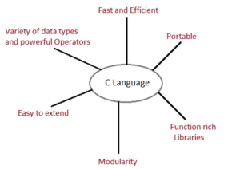

c
links
- main page
- php
- Java
- C
- p4
Introduction
C is a general-purpose high level language that was originally developed by Dennis Ritchie for the Unix operating system. It was first implemented on the Digital Eqquipment Corporation PDP-11 computer in 1972.
The Unix operating system and virtually all Unix applications are written in the C language. C has now become a widely used professional language for various reasons.
C was initially used for system development work, in particular the programs that make-up the operating system. C was adoped as a system development language because it produces code that runs nearly as fast as code written in assembly language.
Advantages
1.1. Building block for many other programming languages
C is considered to be the most fundamental language that needs to be studied if you are beginning with any programming language. Many programming languages such as Python, C++, Java, etc are built with the base of the C language.
1.2. Powerful and efficient language
C is a robust language as it contains many data types and operators to give you a vast platform to perform all kinds of operations.
Take a break & Learn Different Data Types in C
1.3. Portable language
C is very flexible, or we can say machine independent that helps you to run your code on any machine without making any change or just a few changes in the code.
1.4. Built-in functions
There are only 32 keywords in ANSI C, having many built-in functions. These functions are helpful when building a program in C.
1.5. Quality to extend itself
Another crucial ability of C is to extend itself. We have already studied that the C language has its own set of functions in the C library. So, it becomes easy to use these functions. We can add our own functions to the C Standard Library and make code simpler.
1.6. Structured programming language
C is structure-based. It means that the issues or complex problems are divided into smaller blocks or functions. This modular structure helps in easier and simpler testing and maintenance.
1.7. Middle-level language
C is a middle-level programming language that means it supports high-level programming as well as low-level programming. It supports the use of kernels and drivers in low-level programming and also supports system software applications in the high-level programming language.
1.8. Implementation of algorithms and data structures
The use of algorithms and data structures in C has made program computations very fast and smooth. Thus, the C language can be used in complex calculations and operations such as MATLAB.
1.9. Procedural programming language
C follows a proper procedure for its functions and subroutines. As it uses procedural programming, it becomes easier for C to identify code structure and to solve any problem in a specific series of code. In procedural programming C variables and functions are declared before use.
1.10. Dynamic memory allocation
C provides dynamic memory allocation that means you are free to allocate memory at run time. For example, if you don’t know how much memory is required by objects in your program, you can still run a program in C and assign the memory at the same time.
Disadvantages
We have already discussed the advantages of C.
You might be thinking about why we are not approaching the language practically and studying the theoretical part in every tutorial. It is because if you will understand the basic functionalities of the language and the methods or operation of the programming language, it becomes easy for you to know whether this language is suitable for your career or not.
Also, with the basic knowledge of the C language, you can understand the flow of any program.
So, now let us see what the limitations of C programming language are-
1. Concept of OOPs
C is a very vast language, but it does not support the concept of OOPs (Inheritance, Polymorphism, Encapsulation, Abstraction, Data Hiding). C simply follows the procedural programming approach.
2. Run-time checking
In the C programming language, the errors or the bugs aren’t detected after each line of code. Instead, the compiler shows all the errors after writing the program. It makes the checking of code very complex in large programs.
3. Concept of namespace
C does not implement the concept of namespaces. A namespace is structured as a chain of commands to allow the reuse of names in different contexts. Without namespaces, we cannot declare two variables of the same name.
But, C programming lacks in this feature, and hence you cannot define a variable with the same name in C.
4. Lack of Exception Handling
Exception Handling is one of the most important features of programming languages. While compiling the code, various anomalies and bugs can occur. Exception Handling allows you to catch the error and take appropriate responses. However, C does not exhibit this important feature.
5. Constructor or destructor
C does not have any constructor or destructor.
Constructors & Destructors support basic functionality of Object Oriented Programming. Both are member functions that are created as soon as an object of the class is created. You will be studying constructor and destructor in detail later on.
6. Low level of abstraction
C is a small and core machine language that has minimum data hiding and exclusive visibility that affects the security of this language.
Conclusion
Here, we end our tutorial on ‘Advantages and Disadvantages of C Programming’. We hope you found this tutorial beneficial in developing a simple understanding of the pros and cons of C. You might have understood how powerful C is in its process of implementation and execution and at the same time how it lags behind other languages in certain aspects.